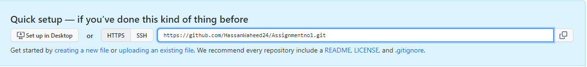
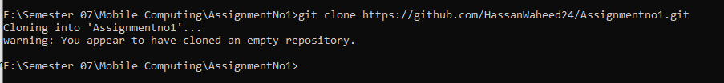
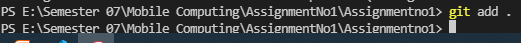

First of all you have to create a GitHub account and install the Git on your pc Then you have to create a repository on GitHub.
In order to clone your repository with your folder you have to copy the link of the repository and run a command on your command prompt. "git clone //link of the repository folder"
Link Image of repository
Run Command on cmd
Git add is use to add a file to repository we can add all files in the folders by using command "git add ." and simply can add a specific file by using this command "git add MyWeb.html"
Image of "git add" command
